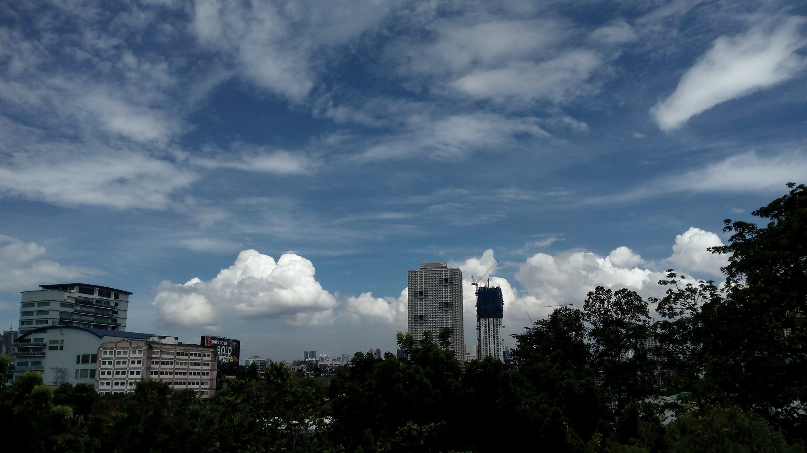
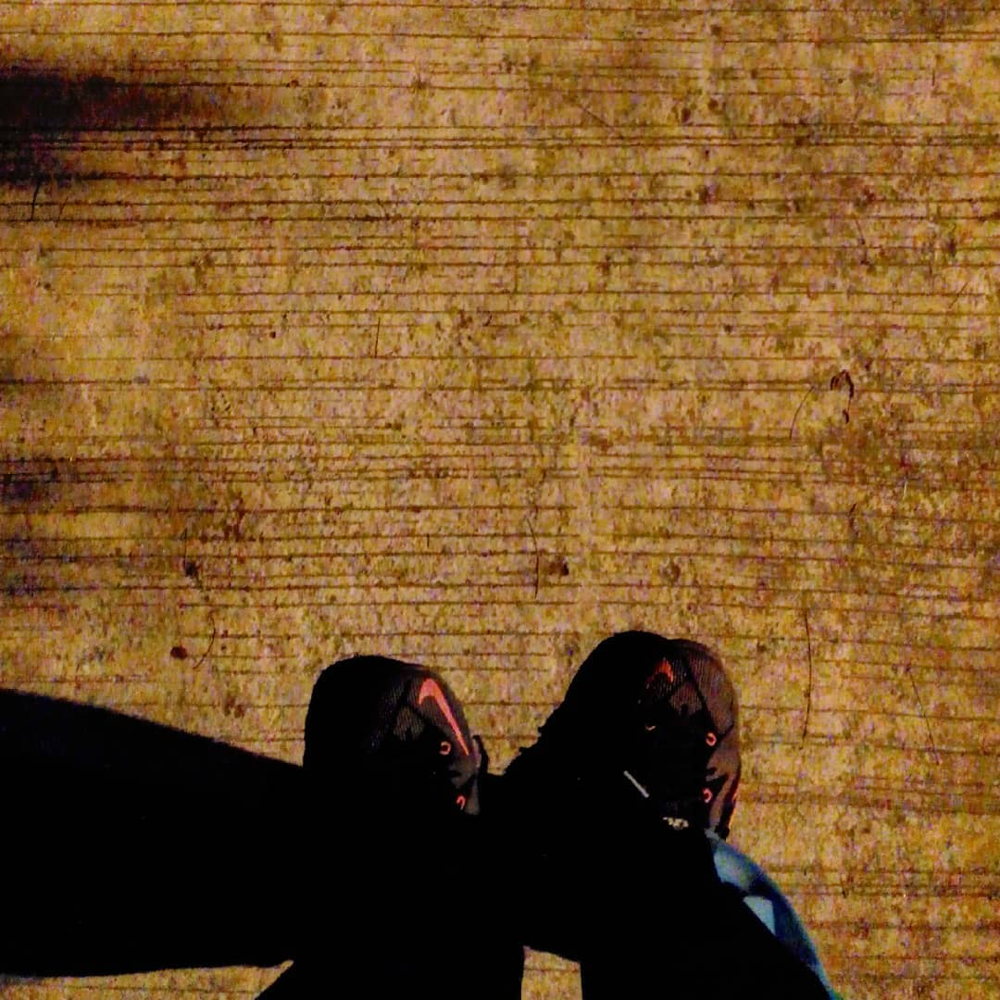
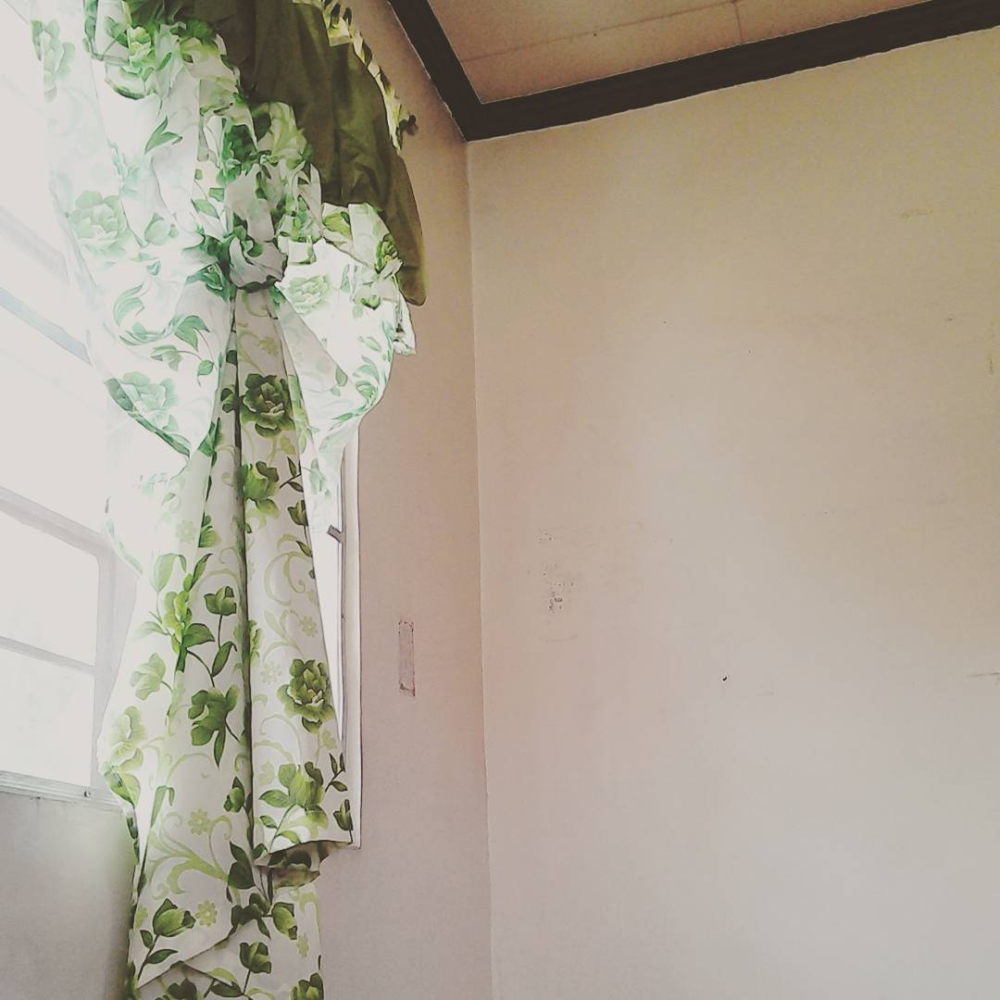

Blog
 I like traveling
I like traveling

Because it's my way of escape from the world that refrains me from being truly free. It's the one thing that I look forward to after doing something that tired me so much to the point of me giving up. It gives me a sense of peace when it comes to traveling to unknown places to me before. It's a way to see the culture of the people living in that area as well as experiencing it first hand. Don't forget the trinkets that you can buy that will serve as a souvenir from that place. I really love it when they have a lot of options when it comes to food because I really like eating delicacies especially desserts. It's great to look back on the displayed ref magnets that you've collected over the years of traveling to many cities and provinces. And once I have my means of earning money, then I will travel to the different parts of the Philipines first before going out of the country. I would like to experience riding in the airplance since I haven't tried to since our hometown is in Luzon.
I like walking

It is a form of exercise and recreation activity that I really like because I think about a lot of things when I'm walking. There are times that whenI'm stuck with what I needed to do for an assignment, I would take a break from sitting and start walking near our house. The times that I really like to walk is when it is dusk or night time because I could see the stars which I really like. I'm fond of the Orion constellation because it's easy to distinguish from the other constellations. Another thing is that I like the sound of the insects at night, it makes me calm for some reason. It feels like I'm out of nowhere and one with nature.
I would like to be in the moment

Rather than dweling on the past or worrying about the future, I would like to enjoy the present because it is something that can be taken away at any moment. Living in the present is what I would like to instill in my mind because I tend to wory a lot if I've done things the right way or if I've hurt people by my actions. Anyway, I hope to be a better person for my own sake as well as those who are dear to me.